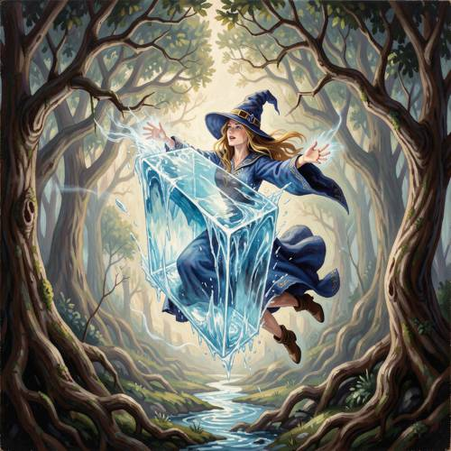
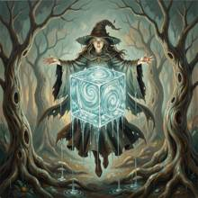
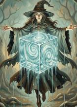

Entity Layout — Please generate a painting: a female wizard floating in mid-air, summo
Please generate a painting: a female wizard floating in mid-air, summoning a huge cubic mass of water with her hands, with a distorted forest in the background, in a surrealist style.

Direct — one call, no iterationContinuum — Qwen3.8-27B + FLUX.2-klein-9B
Judge — Direct
PASSEntity Layout - Three-Dimensional Space — The image shows a female character in a wizard's hat and robe positioned in the center of the frame, with her feet off the ground, indicating she is floating in mid-air. The background consists of a forest with trees that have gnarled, twisted trunks and branches, fitting the description of a 'distorted forest'.
FAILStyle — The image is rendered in a painterly, fantasy illustration style. While the subject matter is magical, the artistic execution does not align with the specific visual characteristics of the surrealist art style, such as dreamlike logic or bizarre juxtapositions of unrelated objects.
PASSAction - Hand (Character/Anthropomorphic) — The female wizard has her hands outstretched towards a large block in front of her. Her palms are open, and there are light effects emanating from her hands, visually representing the act of summoning. The hands are depicted with five fingers each and appear anatomically sound.
PASSAttribute - Shape — The mass being summoned by the wizard is a large, translucent block with clearly defined edges and faces, forming a cuboid or cubic shape. It appears to be made of ice, which is the solid form of water, and has water dripping from it.
Judge — Continuum
PASSEntity Layout - Three-Dimensional Space — The image shows a female wizard in the center, whose feet are not touching the ground, indicating she is floating in mid-air. Behind her is a forest with bare, gnarled trees whose trunks are twisted and have unusual holes, matching the description of a distorted forest in the background.
PASSStyle — The image is a painting that depicts a fantastical and illogical scene: a woman levitating, a floating cube of water, and a forest with twisted, unnatural trees. This combination of dreamlike and bizarre elements is characteristic of a surrealist style.
PASSAction - Hand (Character/Anthropomorphic) — The female wizard has her hands outstretched on either side of the water cube, in a gesture consistent with summoning or holding it. Both hands are visible and have a normal structure with five fingers each.
PASSAttribute - Shape — In the center of the image, floating in front of the wizard, is a large, translucent mass of a blue substance. This mass is clearly shaped as a cube, with defined faces and edges.
What the agent did
Thinking
The user is asking for a painting: a floating female sorceress, summoning a huge cubic mass of water with her hands, a distorted forest in the background, surrealist style. Let me generate with flux2-klein (following policy, always use flux2-klein). Size: the default 1024x1024 is fine, but a portrait or landscape orientation might be better for a painting. Should I go with a portrait-oriented painting — actually, the default 1024x1024 is safe. For a surreal painting, maybe 1024x1280 portrait? The benchmark says image size is fixed for comparison, so I should keep the default 1024x1024. Let's not override the size. Let me write a detailed prompt: "Surrealist oil painting of a female wizard floating in mid-air, arms outstretched, summoning a huge cubic mass of swirling water held in her hands, the cube of water glowing, water cascading off the edges, distorted twisted forest in the background with bent trees, melting surreal forms, dreamlike atmosphere, muted palette with teal water, expressionist brushstrokes, painterly texture, dramatic lighting" Generate it, then inspect, mark the best, edit if needed.
Step 1 — `generate_image`
{
"model": "flux2-klein",
"prompt": "Surrealist oil painting of a female wizard floating in mid-air, long flowing robes and tattered hat, arms outstretched, summoning and holding a huge cubic mass of swirling translucent water between her hands, the cube of water glowing with pale blue light, streams of water falling off its sharp edges, twisted distorted forest in the background with bent melting trees and warped trunks, dreamlike surreal atmosphere, expressionist painterly brushstrokes, visible canvas texture, moody muted palette with teal and amber accents, dramatic rim lighting on the wizard"
}
Result img_0

Thinking
This image is very good. Let me check: a female wizard floating in mid-air ✓ (feet off the ground, floating), summoning a huge cubic mass of water with her hands — hmm, the cube is in front of her, but her arms are spread wide open, and the hands aren't actually holding it. The prompt says "summoning a huge cubic mass of water with her hands." The cube is between her hands, floating just in front of her chest, and her hands are spread out with open palms. This reads reasonably well as "summoning with her hands" — the cube is between her outstretched hands. In surreal art it's fine, but the hands aren't close to the cube. The cube is floating in front of her. You could definitely say this works. Background: distorted forest ✓ (twisted trees). Surrealist style ✓ (painterly, dreamlike). The image already looks good. Let me evaluate: the wizard is floating, the cube of water with swirls and drips is prominent, the distorted forest in the background. This matches the prompt well. Minor nitpick: the hands aren't touching or holding the cube — but "summoning with her hands" is satisfied by the outstretched-hands summoning pose. I think this is a strong result. Maybe I could tighten it up so the hands are closer to the cube, but there's a risk of degrading it. The current composition is a classic summoning pose. I could try a small edit to bring the hands closer to the cube, but that risks drift. The result is already strong, and all the elements are present. Following "good enough is a stopping condition," I'll mark this as the best and stop. Let me mark img_0 as the best.
Model
The first generation is already strong: the wizard is clearly floating, the glowing cube of swirling water is front and center with drips falling from its edges, and the background is a twisted, distorted forest in a painterly surrealist style. Let me verify the details by inspecting closely before marking it.
Step 2 — `inspect_region`
{
"image": "img_0",
"roi": "the female wizard's face and upper body"
}
Result img_1

Thinking
The cropped image confirmed the quality: the face is well-drawn, the hat is good, the hands are clean (5 fingers visible, no deformities), and the cube is well-detailed with a swirl pattern, dripping, and a glowing quality. The wizard is floating (her feet are off the ground, in mid-air). The hands are spread out around the cube in a summoning pose. All the elements of the prompt are in place: - Female wizard ✓ - Floating in mid-air ✓ - Summoning a massive cubic mass of water with her hands ✓ (the cube is suspended between her outstretched hands) - Distorted forest in the background ✓ - Surrealist style ✓ (painterly, dreamlike) This is a strong result. I'll mark it as the best and stop — a good enough stopping condition is met.
Model
The cropped image confirmed the fine details: the face is drawn cleanly, the outstretched hands are well-formed, the cube of water has a sharp, glowing cubic shape, a swirling water surface, and a clean dripping trail, and the figure is clearly floating. All the elements of the prompt are in place — a floating female wizard, a massive cube of water suspended between her outstretched hands, a twisted, distorted forest, and a painterly surrealist style. This is a result I can submit.
Step 3 — `mark_best`
{
"image": "img_0",
"reason": "All prompt elements present: floating female wizard, huge glowing cubic mass of swirling water summoned between her outstretched hands, distorted twisted forest background, surrealist painterly style. Verified details via crop."
}
Thinking
Marked. Since the image already satisfies everything the prompt asks for, I'll stop here.
Model
Done. The painting shows a female wizard in a tattered hat and cloak, hovering in mid-air with her arms spread, summoning a huge cube of glowing, swirling water that drips from its edges. Behind her, the forest is warped and twisted — bent trunks and distorted branches forming a surreal frame around the scene — all rendered in a moody, painterly surrealist style. I've marked this as the best result (img_0).